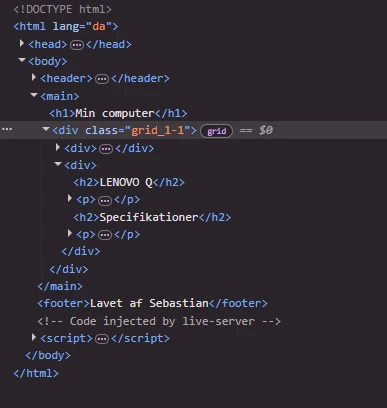

Hvad er gestaltlovene?
Kilde: Interfacedesign af Morten Rold s. 118
Gestaltlovene beskriver hvordan mennesker opfatter visuelle objekter i forhold til hinanden, indenfor Interfacedesign
De 5 gestaltlove består af:
*Loven om nærhed (Proximity) Elementer der er placeret tæt på hinanden bliver opfattet som relateret til hinanden.
*Loven om lighed (Similarity) Elementer der ser ens ud bliver opfattet som relateret til hinanden
*Loven om kontinuitet (Good continuation) Elementer der er placeret så de danner linjer eller kurver opfattes som relateret til hinanden
*Loven om lukkethed (Common region) Elementer der er lukket inde i samme indramning bliver opfattet som relateret til hinanden
*Loven om figurdannelse (Closure) Elementer der er seperate kan opfattes som en samlet figur
Hvad er et grid?
Et grid er et gitter indenfor design som består af rækker og kolonner. Det er et rigtig vigtigt værktøj indenfor design da det kan skabe struktur på en hjemmeside.
Indenfor HTML og CSS, bliver et grid aktiveret af "display:grid" og ved brug af "grid-template-columns". Man kan også bruge grid-column til at styre et gitters rækker og kolonner.
Mobile first
I temaet er vi blevet introduceret til "mobile first" konceptet som er rigtig god at arbejde ud fra i nutidens verden, da langt størstedelen af befolkningen er på deres mobil i dag.
Måden jeg har gjort det på i studiestartsprøven, er at jeg har lavet en style css og en layout css. På den måde havde jeg nemmere mulighed for at arbejde med mobilsitet. Grunden til at det er bedre at arbejde med mobile first skyldes at de fleste brugere i dag, bruger internettet på deres mobil. Mobile first gør også at man kan øge ens SEO på nettet og det forbedre en hjemmesides indlæsningstid og giver dermed en bedre brugeroplevelse (UX).
Gennem processen med opsætningen benyttede jeg "Inspector tool" som jeg også stadig bruger rigtig meget. Dette værktøj hjælper mig til at få overblik over strukturen og hvilken class jeg har sat elementerne i og jeg bruger den også til at tjekke om der er nogle kodninger der måske overlapper hinanden, hvorefter jeg, inden jeg ændrer i koden, ser om mit valg fungerer og eventuelt kan fikse overlaps.
Løsning
Ved at anvende værktøjer som inspector tool, wireframe, layout, grid og teorier som gestaltlovene, har jeg lavet et website, som giver brugeren nem forståelse for, hvad websitet handler om.
Det opfyldte også kravet til studiestartsprøven om at vores kodning skulle have de samme placeringer som vist på wireframe og layoutdiagram.
Det færdige resultat kan ses her:

Læring
På dette tema har jeg lært hvordan man sætter HTML og CSS op og arbejder ud fra "mobile first" konceptet.
Arbejdet med grid var udfordrende i starten, men ved at have lavet nogle af grid øvelserne og grid-øvnings spillet har jeg fået en meget bedre forståelse for værktøjet.
Jeg har også lært hvor vigtigt det er at arbejde ud fra gestaltlovene, da det kan medvirke til at brugerne bedre forstår strukturen på en hjemmeside.